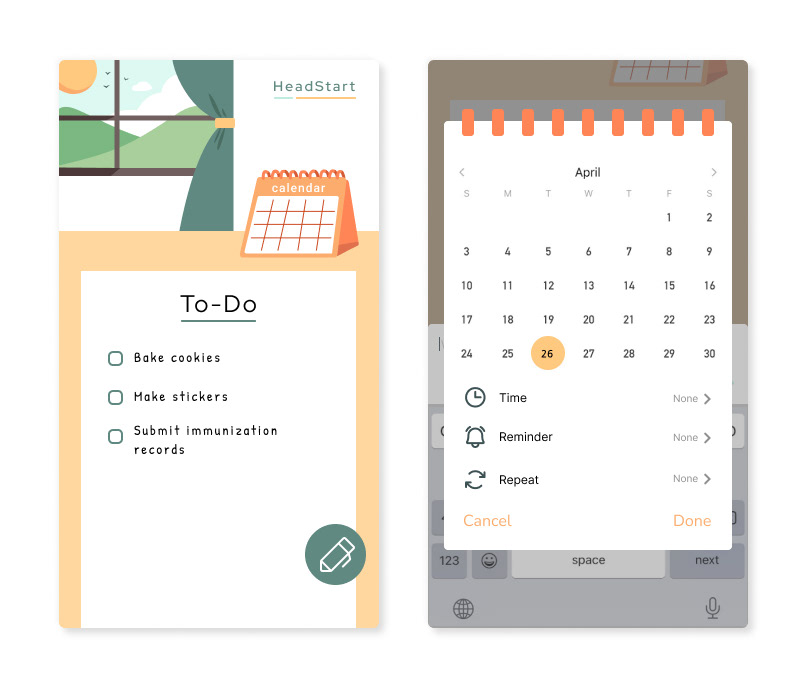
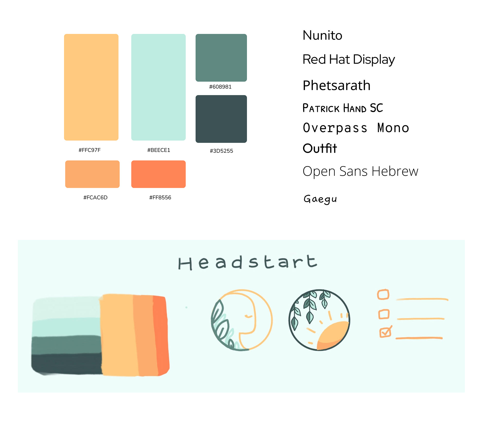
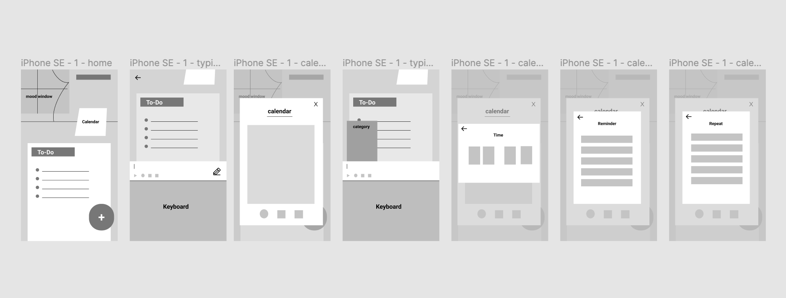
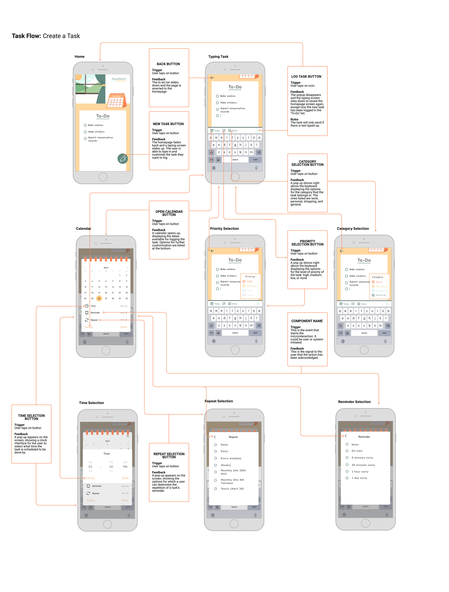
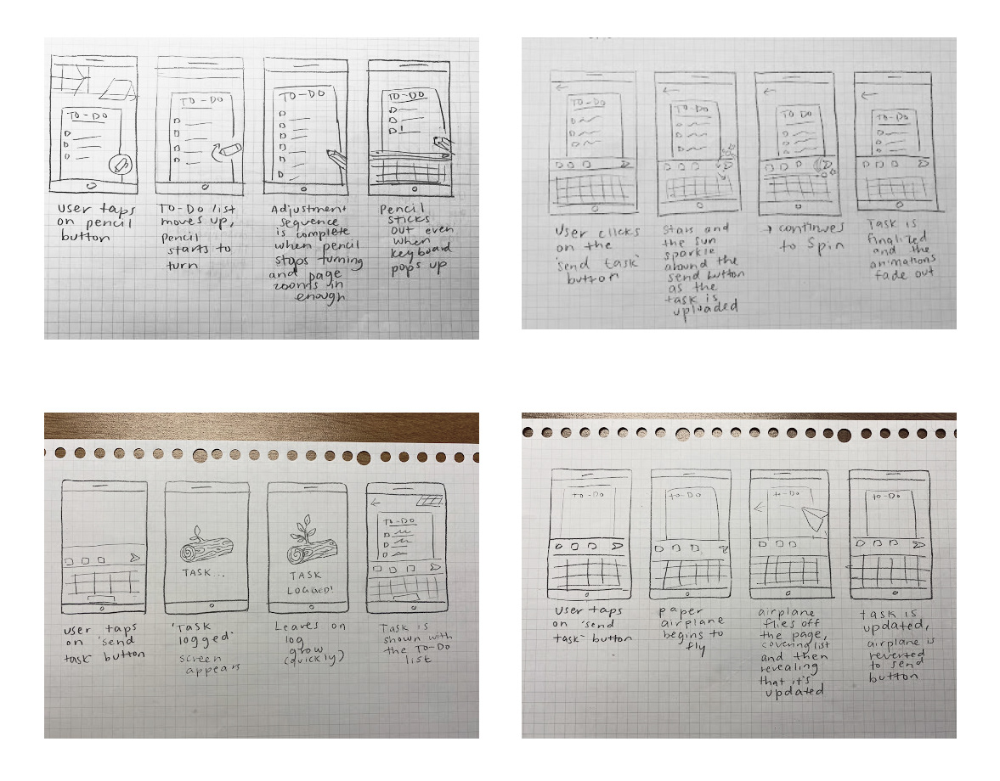
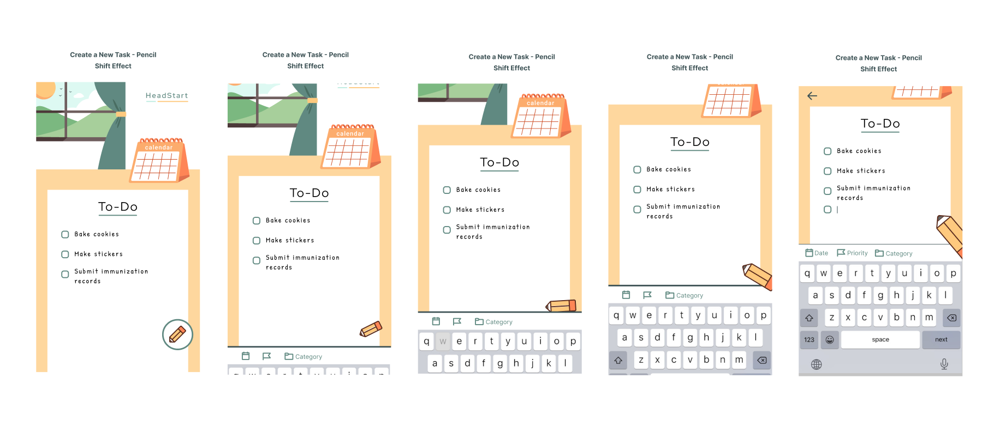
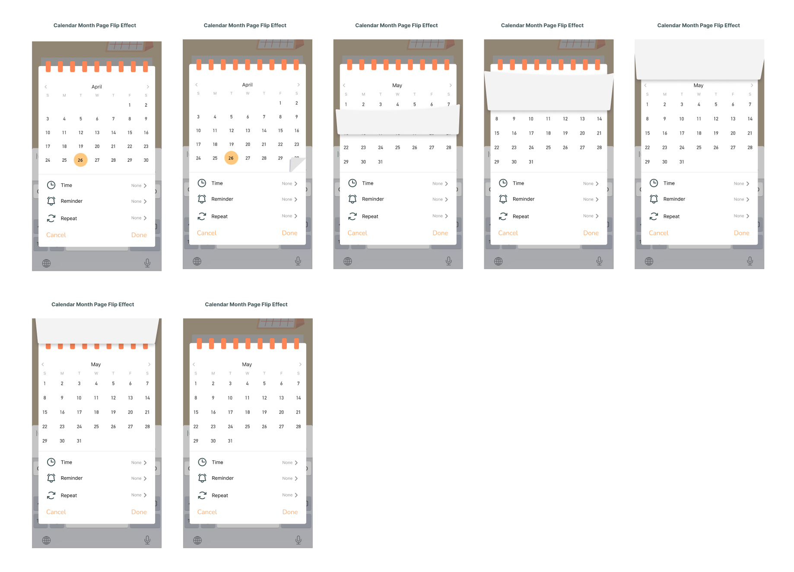

HeadStart: A Microinteraction Design Project
Anoushka Sandeep

The Overview
HeadStart is a self management and task list maintenance app design that I have worked on with Figma and AfterEffects. This project is centered on creating meaningful microinteractions and I explored creating animations and implementing them into application designs. You can view the demo of the project in the video below.
The process of developing this project started with figuring out what kind of mobile app to redesign to be more dynamic. At the time, I had been using a personal task management app and wished that it was less minimalistic and felt more personal, and so creating meaningful microinteractions to enhance the experience of using this app became the target of this project. I began putting together a style guide including a color palette and possible logos.

Context & Challenge
The next step was to arrange wireframes that would denote what features would be placed where. These wireframes were done with monochrome colors to affirm good contrast quality, and were designed to resemble a desk setup. The calendar would appear to be a standing calendar on the desk, and there would be a window in the top left for ambience. The main feature is the To-Do list on on the desk with a 'new task' button on the bottom right.

Process & Insight
Every page needed for this project was created on Figma and the elements were arranged to replicate what the interactive experience would be like for a user. The task flow of creating a to-do task had been mapped out (as displayed below), from starting at the homepage, to typing and customizing the task, to uploading the task to the to-do list.

Process & Insight
Multiple sketches were created to note down various possible microinteractions that would be made to enhance the existing flow of the app. The main elements that I had made variations of were of the 'New Task' button and the 'Upload Task' button. These were to have simple animations that would give more life to the UI and make the app feel less two dimensional

Process & Insight
When the design was carried through, they were created as layers on Figma and were transferred to AfterEffects to be manually animated. The 'New Task' button was created as a pencil inside a circle, and when clicked on the pencil enlarges and turns at an angle to prop itself by the keyboard. Tasks are registered into the To-Do list with the enter button on the keyboard, and the user would click the pencil when done updating the list. The pencil will then animate back to the original position.
The second animated microinteraction is that the calendar will have a flipping page animation when scrolling between months. This is to simulate a calendar in real life that has its pages attached onto a spiral. The page flips forwards and backwards depending on whether the month is incrementing or decrementing.

